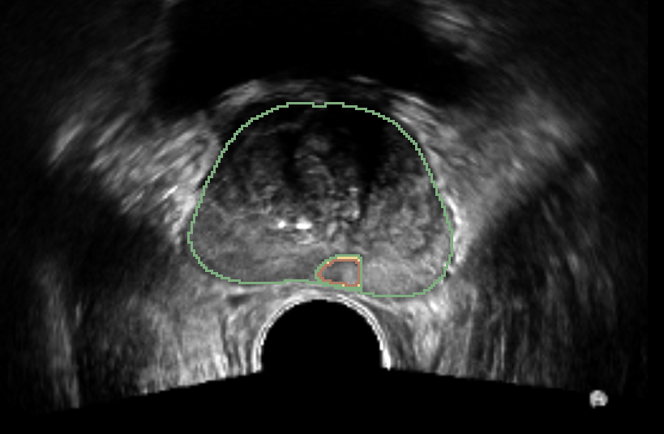

THE MISSING AI LAYER IN PROSTATE BIOPSY
eMAP leverages multimodal AI by using ultrasound and MRI to give urologists csPCa predictions during biopsy, so every core counts.

The problem
Most clinically significant prostate cancers are hard to distinguish on conventional ultrasound. MRI-targeted biopsy helps, but it depends on MRI access, expert reads and fusion workflows that many practices can't offer every patient.
1 in 2
Systematic ultrasound-guided biopsy can miss csPCa, delaying treatment (PROMIS Trial).
2x
3 in 5
Guideline care depends on zip code: in 2023, 3 in 5 US veterans had no MRI before biopsy, with wider gaps for rural and Black veterans.(Huang et al., JAMA Netw Open 2025)
The platform
eMAP is a decision support tool. It reads the images urologists already capture and in both cases where MRI is available and unavailable using ultrasound only inference to detect csPCa lesions in the biopsy room,.
01 · Acquire
No new hardware. eMAP takes the ultrasound and incorporates pre-biopsy MRI when a patient has one.
02 · Predict
Models trained on pathology-confirmed biopsies highlight regions likely to harbor csPCa directly in ultrasound space.
03 · Decide
Suggested targets inform, never dictate. Every acceptance or override rests with the urologist.
Ethical by design
Clinical AI fails when clinicians can't trust it. We design for transparency and accountability from the first line of code, shaped by interviews with urologists, researchers, patient advocates and other clinicians.
Every prediction will show how sure the model is, so uncertainty is visible, not hidden.
Clinicians acknowledge and can override any suggestion, and each decision will be recorded.
We’re testing performance across ultrasound vendors, not just the system a model was trained on.
Patient advocates help decide what is shown, explained and consented to.
Team
Project Lead · AI & Imaging · Assistant Professor of Radiology, Stanford Medicine
Co-PI · Biomedical Ethics · Advisor Assistant Professor (Research) of Pediatrics, Biomedical Ethics, Stanford University
Co-PI · Urology · Professor of Urology, Stanford University
We're looking for investors, clinical collaborators and recruiting clinicians for interviews to help shape eMAP.